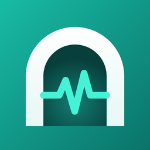

Tunnel Doctor — Support
Contact
Questions, bug reports and suggestions: gosha0993@gmail.com. Please include your iPhone model, iOS version and app version. Do not send user IDs, keys or subscription URLs.
Common questions
How do I add servers?
Tap “+” on the Servers tab: paste a VLESS link or subscription URL from the clipboard, enter a subscription URL, or fill in a server manually.
A server is marked “Down”. What does it mean?
None of the delay probes got a response through that server. Open the server and check the Configuration check section: a missing REALITY key, wrong SNI or short ID is the most common cause. If the configuration is fine, the server itself may be unavailable — send the report from the History tab to its administrator.
The VPN connects but websites do not open.
Run the test on the Tunnel test tab and look at each step. If the problem remains, connect, tap “Copy tunnel log” and email it to us.
Why does iOS ask to add a VPN configuration?
Connecting to a server and the tunnel test use the iOS VPN system. The configuration is created on your device only.
Does Tunnel Doctor sell or provide VPN access?
No. The app has no built-in servers, accounts or purchases.
Связь
Вопросы, ошибки и предложения: gosha0993@gmail.com. Укажите модель iPhone, версию iOS и версию приложения. Не присылайте ID пользователей, ключи и ссылки на подписки.
Частые вопросы
Как добавить серверы?
Нажмите «+» на вкладке «Серверы»: вставьте ссылку VLESS или URL подписки из буфера обмена, введите URL подписки или заполните сервер вручную.
Сервер помечен как «Недоступен». Что это значит?
Ни одна проба задержки не прошла через этот сервер. Откройте сервер и посмотрите раздел «Проверка конфигурации»: чаще всего причина в отсутствующем ключе REALITY, неверном SNI или short ID. Если конфигурация в порядке, возможно, недоступен сам сервер — отправьте отчёт с вкладки «История» его администратору.
VPN подключается, но сайты не открываются.
Запустите тест на вкладке «Тест туннеля» и посмотрите результат каждого шага. Если проблема остаётся, подключитесь, нажмите «Скопировать журнал туннеля» и пришлите его нам на почту.
Почему iOS просит добавить конфигурацию VPN?
Подключение к серверу и тест туннеля используют системный VPN iOS. Конфигурация создаётся только на вашем устройстве.
Tunnel Doctor продаёт или предоставляет VPN?
Нет. В приложении нет встроенных серверов, аккаунтов и покупок.